Appendix B.. Key Graphs
Graphs:
- Help you to convey knowledge and understanding efficiently in the written
- Are often a feature of the viva as they allow examiners to assess depth of understanding
- You will be asked to demonstrate how they change under different physiological states
It is easy to get distracted by the curve, and forget the basics (especially in the written). To avoid this, approach them in the same way each time:
- Axis
First draw the axis.- If the axis is continuous (e.g. PaO2), ensure you place an arrow at the far end
- If the axis ends at a fixed point (e.g. SpO2), ensure you place a bar at the end to signify it does not continue indefinitely
- Labels
Label each axis with what it is representing. - Units
Give each label appropriate units.- In the viva, you can just say this out loud as you’re drawing the axes
- Curve
Draw the curve. - Special Points
Identify the key points of the curve and label these points. These include:- Intercepts
- Inflection points
- Important values
e.g. The mixed venous point.
Pharmacology
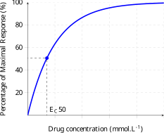
- Dose response curve is a wash-in exponential
- Difficult to compare different drugs using this curve
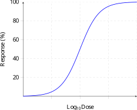
- Log-transform of dose allows different drugs to be compared
- Both red and blue drugs are full agonists (as they both reach 100% response), however the blue drug is more potent as it has a lower ED50
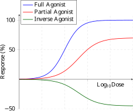
- Partial agonists do not reach 100% response
- Inverse agonists have a negative response
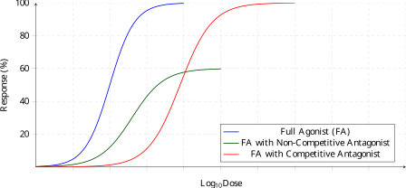
- Non-competitive antagonists prevent maximal response being reached
- Competitive agonists right shift the curve, as they can be overcome with increasing dose of agonist
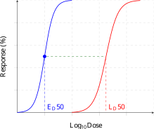
- Can be calculated from the ratio of the LD50 and ED50
Models
- Drug is added to and removed from the single central compartment
There is no distribution possible. - V1 is equal to the volume of distribution
- k10 is the rate constant for elimination
- Drug is added to and removed from the central compartment
- Drug will also distribute to (and redistribute from) the peripheral compartments
- Plasma concentration will depend on:
- Rate of drug delivery
- Rate of drug distribution and redistribution
- Rate of drug elimination
- Drug distributes to the effect site from the central compartment
- Effect site has no volume, but does have rate constants
- t1/2ke0 is generally drawn with drug being eliminated from the effect site, however in reality this does not occur as drug should only be eliminated from the central compartment
Pharmacokinetics
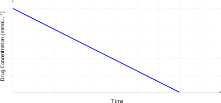
- A constant amount of drug is eliminated per unit time
- Half-life is not a constant value
Half-life progressively shortens, as the time taken to go from 50% to 25% is half the time it took to go from 100% to 50%.
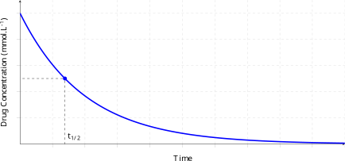
- A constant proportion of drug is eliminated per unit time
- Half-life is a constant value
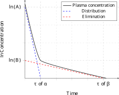
- Note that concentration has been log-transformed
- This describes the elimination of drug from a two compartment model
Pharmacodynamics
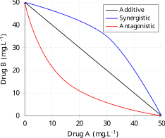
- Plots lines of equal activity versus concentration of two drugs
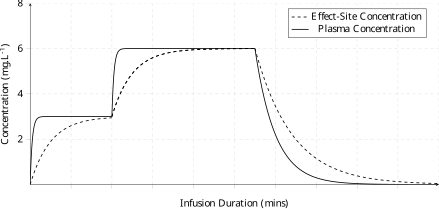
TCI graphs are easy to draw if you remember that:
- The pump aims to achieve the targeted concentration:
- As rapidly as possible
- Without overshoot
- Effect site concentrations fall slower than plasma site concentrations Drug can only redistribute back to plasma when effect site concentration is greater than plasma concentration.
Therefore in plasma site targeting:
- Plasma concentration rises rapidly with initial bolus dose
- Does not overshoot
- Effect site concentration rises more slowly
- Exponential wash in curve as the concentration gradient between plasma and effect site falls over time
- Exponential wash in curve as the concentration gradient between plasma and effect site falls over time
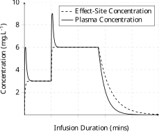
- Plasma concentration overshoots effect-site target and then declines rapidly
- Effect site concentration rises rapidly, and is achieved more quickly compared with plasma-site targeted model
Statistics
- Box is defined by the 25th and 75th centiles
- Line in the middle of the box is the median (“50th centile”)
- “Whiskers” either side of the box define the 10th and 90th centiles
- These may also refer to the 5th and 95th centiles
- Results outside of whiskers are defined as outliers, and are represented by single dots
Cellular Physiology
Action Potential
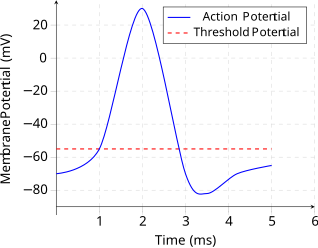
- Graph of membrane potential versus time
- Resting membrane potential is ~-70mV
- Consists of five phases:
- Rising Phase
A stimulus which rises above the threshold potential opens fast Na+ channels, increasing Na+ influx. - Peak Phase
Inactivation of fast-channels and delayed activation of K+ channels slows depolarisation, which peaks at 30mV. - Falling Phase
Membrane potential falls with potassium efflux. - Hyperpolarisation
As potassium channels close slowly, the membrane potential slightly undershoots resting potential - this is the relative refractory period which lasts 10-15ms. - Resting
Cell is stable at resting membrane potential.
- Rising Phase
Respiratory
Oxygen
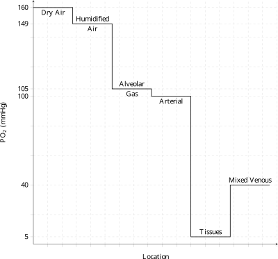
- Graph of location versus oxygen partial pressure
- Atmospheric (dry) air has a PO2 of 160mmHg
- Tracheal (humidified) gas has a PO2 of 149mmHg
Reduced due to saturated vapour pressure of water. - Alveolar gas has a PO2 of 105mmHg
Reduced to the presence of CO2, as per the alveolar gas equation. - Arterial blood has a PO2 of ~100mmHg
Reduced to the Alveolar-arterial oxygen gradient.
- Tissues have a PO2 of ~5mmHg
- Mixed venous blood has a PO2 of ~40mmHg
Greater than tissue PO2 as not all oxygen in blood diffuses into or is consumed by tissues.
Oxyhaemoglobin Dissociation Curve:
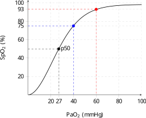
- Graph of PaO2 versus oxygen saturation
- Note that PaO22 is continuous, and so an arrow should be drawn at the tip of the x-axis, whilst saturation is finite and so the y-axis should be capped at 100%
- The curve is a sigmoid shape
- Key points:
- At 10mmHg, saturation is 10%
- The p50 is at 27mmHg
- The mixed venous point is at 40mmHg, where haemoglobin is 75% saturated
Note that due to the Haldane effect, the mixed venous point does not technically exist on the arterial curve. This is a small point and is ignored in most graphs (including this one), but may be worth stating if you’re feeling confident in the viva. - The “ICU point” (the upper inflection) is at 60mmHg where haemoglobin is 93% saturated
- The arterial point is 97% saturated at 100mmHg
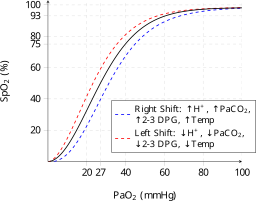
- The curve may be right-shifted by:
- Increased H+
- Increased PaCO2
- Increased temperature
- Increased 2-3 DPG
- These shifts are defined by a movement of the p50
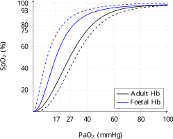
- The double Bohr effect can easily become confusing, especially when you are under pressure and only allowed one colour (as in the written exam)
Here is a straightforward method which minimises the confusion:- Draw an adult curve with a p50 of 27mmHg
- Draw a foetal curve with a p50 of 17mmHg
- Draw a right-shifted adult curve
- Draw a left-shifted foetal curve
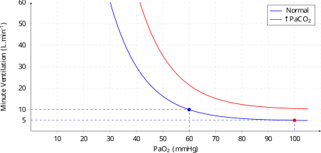
- Exponential curve
- Minute ventilation doubles as PaO2 decreases from 100mmHg to 60mmHg
- Inflection point is ~50-60mmHg
Below this there is a large increase in ventilation. - Hypercapnea leads to a greater minute ventilation for any given PaO2
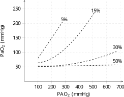
- Plots the relationship between PAO2 versus PaO2 for different (fixed) shunt fractions
- These are known as isoshunt lines
- Key isoshunt lines are:
- At 50% shunt, PaO2 is essentially independent of PAO2
- At 30% shunt, PaO2 will not increase above 100mmHg on 100% oxygen at atmospheric pressure
Carbon Dioxide
Carbon Dioxide Dissociation Curve:
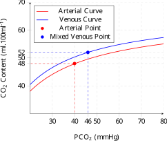
- Graph of carbon dioxide content versus partial pressure
- Key points on this curve:
- Arterial CO2 content is 48mls.100ml-1 of blood at 40mmHg
- Mixed venous CO2 content is 52.mls.100ml-1 of blood at 46mmHg
- Note that the mixed venous curve is up-shifted due to the Haldane effect
Remember that 50% of the difference in CO2 content is due to the Haldane effect. Therefore:- The mixed venous curve should be drawn such that CO2 content is 50mls.100ml-1 at 40mmHg
- The arterial curve should be drawn such that CO2 content is 50mls.100ml-1 at 46mmHg
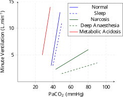
- Graphs the change in minute ventilation for primary change in PaCO2
- Remember that minute ventilation increases by ~3L.min-1 for every 1mmHg increase in PaCO2
From this, the relationship to other states can be derived:- Minute ventilation is reduced during sleep, but the central response to CO2 is only minimally affected
- The central response to CO2 is heavily affected during anaesthesia
- Minute ventilation is increased for any given PaCO2 in the setting of acidosis
Alveolar Ventilation and PaCO2:
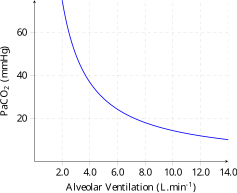
- Graphs the change in PaCO2 for a primary change in minute ventilation
- Exponential curve as PaCO2 is inversely proportional to minute ventilation
- Minute ventilation is increased for any given PaCO2 during exercise
Anatomical and Physiological Interactions
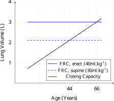
- Note that although FRC increases slightly with age, this is not generally shown on this graph
- Closing capacity increases with increasing age
Key intersections are:- Greater than FRC when supine at 44 years of age
- Greater than FRC when erect at 66 years of age
Diffusion and Perfusion Limitation:
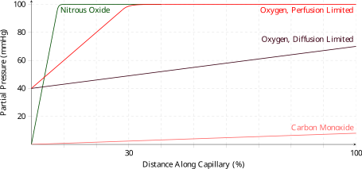
- Classically drawn as partial pressure versus distance along the capillary
Time along capillary may also be used, however note that total transit time will change with cardiac output. - Note that at the beginning of the capillary, oxygen partial pressure will be equal to that of mixed venous blood
- In perfusion limitation, PaO2 will equal PAO2 before the end of the capillary
- In diffusion limitation, partial pressures will not be equal at the end of the capillary
- In normal circumstances, PaO2 equals PAO2 at ~1/32 of the distance along the capillary
If time is being graphed on the x-axis, then this will occur at ~0.25s, as total capillary transit time is ~0.75s.
- Nitrous oxide rapidly diffuses into blood and is and not typically present in mixed venous blood, so this curve begins at the origin and PaN2O will rapidly reach PAN2O (in this instance 100mmHg)
- Carbon monoxide binds avidly to haemoglobin and so PaCO increases slowly, resulting in diffusion limitation
Regional Ventilation and Perfusion:
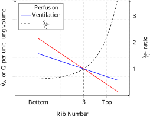
- Graph of alveolar ventilation and alveolar blood flow versus rib number in the erect person
- Basal alveolar have greater perfusion and ventilation than apical alveoli
- Note the perfusion gradient is steeper than the ventilation gradient
- Note that the V/Q ratio is:
- ~1 at the 3rd rib
- ~3.3 at the apex
- ~0.63 at the base
Airway Resistance and Airway Generation:
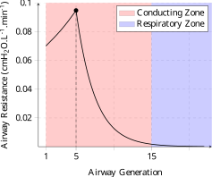
- Graph of airway resistance versus airway generation
- Airway generations are from 1 to 23, and so this graph should not extend outside these values
- Airway resistance is maximal at the 5th generation
This has the lowest total cross-sectional area. - Airway resistance is negligible in the respiratory zone, which exists after the 15th generation
Airway Resistance and Lung Volume:
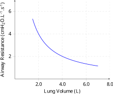
- Airway resistance decreases as lung volume increases as radial tension distends airways, increasing their cross-sectional area and lowering airway resistance
Pulmonary Vascular Resistance and Pulmonary Artery Pressure:
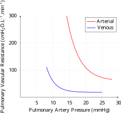
- Pulmonary vascular resistance decreases as pulmonary artery pressure increases
- Arterial pressure has a greater effect on PVR than venous pressure
Lung and Chest Wall Volume and Pressure Relationships:
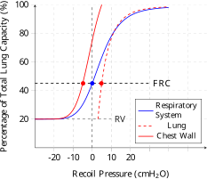
- Graph of lung volume versus recoil pressure
- Expressing lung volume as a percentage of total lung capacity may make it easier to remember the key points on this graph
- Note that recoil pressure is the pressure generated between the lung and the chest wall when they are distended, it is not intrapleural pressure
- This graph is complex and it is easy to draw incorrectly
This is an approach to make it as easy as possible:- Draw a sigmoid graph for the pressure-volume relationship of the respiratory system as a whole
- As recoil pressure is 0 at FRC this will be the y-intercept
- The graph will asymptote at residual volume, as volume (by definition) cannot become lower than this volume
- Draw a steep run-away exponential for the pressure-volume relationship of the chest wall
- Recoil pressure should be -5cmH2~O at FRC
- Recoil pressure should be 0cmH2O at ~75% of TLC
- Recoil pressure should not exceed 5cmH2~O at TLC
- Draw a steep wash-in exponential for the pressure-volume relationship of the lung
- Remember lung volume cannot fall below residual volume
- Recoil pressure should be 5cmH2~O at FRC
This should be equal and opposite to the recoil pressure for the chest wall, as the sum of these must be 0 at FRC. - Note that this curve should slightly exceed the curve for the respiratory system as recoil pressure increases
- Draw a sigmoid graph for the pressure-volume relationship of the respiratory system as a whole
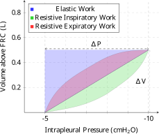
- Graph of lung volume (above FRC) versus intrapleural pressure
Note that intrapleural pressure becomes more negative along the x-axis. - The area under different sections of this curve give the work of breathing
- Elastic inspiratory work of breathing is given the blue triangle
- Resistive work of expiration is given by the red area
Note that as this is entirely contained within the area of elastic inspiratory work, expiration is passive and does not require additional energy expenditure. - Resistive work of inspiration is given by the green area
Work of Breathing - Active Expiration:
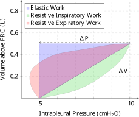
- When resistive expiratory work exceeds elastic inspiratory work, active expiration must occur
- In this graph, active expiration is given by the red area not contained with the blue triangle
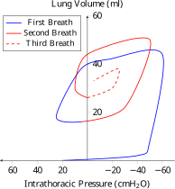
- This graph describes the pressure-volume changes of the neonate as it takes its first breaths and establishes FRC
- This graph is easy to draw provided you remember that:
- Prior to the first breath, lung volume is 0
- As the lung initially has very poor compliance, the intrapleural pressure must become very negative more lung volume increases substantially
- At the end of each breath, intrathoracic pressure is close to 0
- With each subsequent breath:
- Lung compliance improves
Therefore the magnitude of pressure swings is reduced. - FRC increases
Lung volume at end-inspiration is increased.
- Lung compliance improves
Spirometry
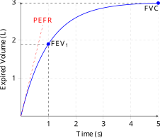
- Graph of expired volume (vital capacity) over time
- ~80% of total volume is expired within the first second (FEV1)
- Total FVC is 4.5L in the 70kg Guyton Man
- The gradient of initial expiration is the peak expiratory flow rate
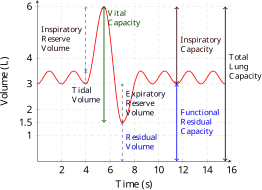
- Graph of lung volume over time
- Includes a normal tidal breath and a vital capacity breath
Flow-Volume Loops
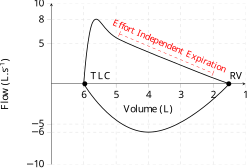
- Peak expiratory flow is ~8L.s-1
- Peak inspiratory flow is ~6L.s-1
- Effort independent expiration occurs during expiration
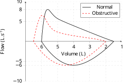
- Residual volume and total lung capacity are increased due to gas trapping
- Peak expiratory flow is reduced
- There is scalloping of the effort-independent portion of the curve
Also known as a concave curve.
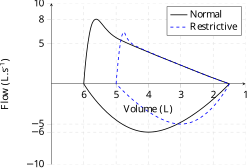
- Total lung capacity is reduced
- Residual volume is normal
- Peak expiratory flow may be reduced (as seen here)
However the FEV1:FVC ratio will be normal in purely restrictive lung disease. - Effort-independent expiration is linear and will join with the normal curve
Fixed Upper Airway Obstruction:
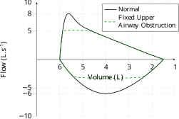
- Obstruction that does not change calibre throughout the respiratory cycle
- Peak expiratory and inspiratory flow rates are limited
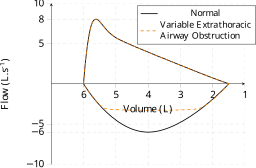
- Obstruction worsens during inspiration as it is ‘pulled in’ by negative intrathoracic pressure
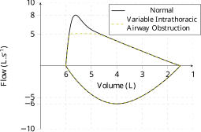
- Obstruction worsens during expiration as it is compressed by dynamic airways compression
Anaesthetic Agents
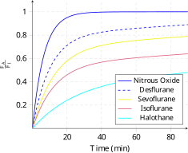
- Graph of the alveolar over inspired agent fraction versus time for various volatile agents
- Indicates the relative speed of onset of different agents
- Uptake of agent is proportional to solubility in blood, and therefore is in order of their blood:gas coefficients
- The exception is nitrous oxide, which has a faster rate of rise than desflurane despite its greater blood:gas coefficient due to the concentration effect
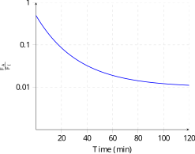
- Graph of alveolar agent fraction versus time for a volatile agent
- Note the logarithmic scale on the y-axis
- Exponential washout curve
- Function of two separate washout curves
- Rapid washout with removal of agent from circuit and FRC
- Slow washout due to diffusion of agent from tissues into blood, and then alveolus
Cardiovascular
Left Ventricular Coronary Blood Flow:
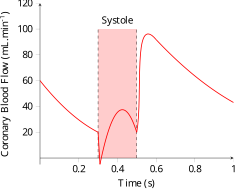
- Graph of blood flow to the left ventricle over time
Systole should be clearly identified. - Left ventricular flow occurs predominantly in diastole
Peak flow is ~115ml.min-1. - There is a brief period of flow reversal during isovolumetric contraction
Right Ventricular Coronary Blood Flow:
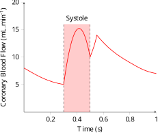
- Graph of blood flow to the right ventricle over time
- Right ventricular flow occurs throughout the cardiac cycle
This is because aortic root pressure exceeds cavity pressure throughout the cardiac cycle. - Peak flow is ~15ml.min-1
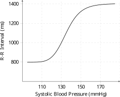
- Graph of heart rate versus systolic blood pressure
Note that the RR interval is inversely proportional to heart rate. - Heart rate responses asymptote at extremes of blood pressure
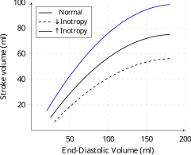
- Typically drawn as a graph of stroke volume (or cardiac output, assuming a constant heart rate) versus preload (typically estimated as end-diastolic volume, but may also be end-diastolic pressure)
- Graph does not cross the origin as EDV is never 0ml
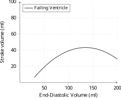
- Myocardium that has been overloaded by high end-diastolic volumes may lead to a decrease in tension generated by the myocardium
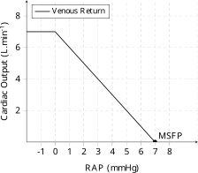
- Graph of venous return versus right atrial pressure
- The x-intercept is the point of no flow within the circulation (as VR = CO), and therefore is the mean systemic filling pressure
- The curve flattens when RAP becomes negative, as external tissues act as a Starling resistor and prevent further increases in flow
Venous Return - Compliance and Volume:
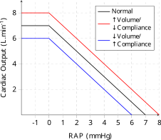
- Decreasing venous compliance or increasing circulating volume results in an increase in mean systemic filling pressure (as for any given compliance, pressure must increase if volume increases) and an increase in venous return for any given right atrial pressure
- The opposite occurs with a decrease in circulating volume or an increase in venous compliance
Venous Return - Resistance to Venous Return:
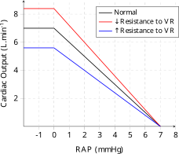
- Altering resistance to venous return (e.g. during pregnancy, or laparoscopic surgery) will alter venous return without changing mean systemic filling pressure
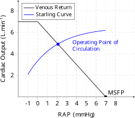
- Plotting the venous return curve and the Starling curve on the same axes generates this graph
- This is only valid at steady state, i.e. when CO = VR
- Note that as steady-state exists when CO=VR, the intercept of these two curves is the operating point of the circulation
- Wiggers diagram is a graphical representation of the events during each phase of the cardiac cycle
- Key points to note:
- Aortic diastolic pressure occurs just prior to aortic valve opening
A common mistake is to label diastolic pressure at the dicrotic notch. - Ventricular pressure exceeds aortic pressure during ejection
- Aortic pressure will slightly exceed ventricular pressure during the last part of ejection
This is due to the inertia of ejected blood causing ongoing forward flow despite the pressure gradient. - The dicrotic notch occurs on the aortic pressure curve
A common mistake is to draw this on the ventricular curve. - CVP slightly exceeds ventricular pressure during ventricular filling
- The C wave occurs during isovolumetric contraction
- The V wave begins prior to the T wave, but peaks after the T wave has finished
- Electrical events slightly proceed ventricular mechanical events
- Aortic diastolic pressure occurs just prior to aortic valve opening
Action Potentials
- The pacemaker potential has only three phases, and notably no ‘resting phase’
This is due to the funny current. - Maximal diastolic potential is -65mV
- Peak membrane potential is ~20mV
Pacemaker Potential - Ion Flux:
- Demonstrates the timing of electrolyte passage across the cell membrane
- Funny current occurs throughout phase 4 and the early part of phase 0
- T-type calcium current begins in late phase 4 and terminates prior to the onset of phase 0
- L-type calcium current overlaps with the T-type current and continues throughout phase 3
- Outward rectifying potassium current begins during phase 3 and continues during phase 4, restoring membrane potential
Pacemaker Potential - Autonomic Tone:
- Alteration to autonomic tone alters the slope of the funny-current
(Some sources also note a change to maximal diastolic potential, although this is not shown here).

- The ventricular action potential consists of 5 phases
- 0: Rapid depolarisation
- 1: Partial repolarisation
Due to initial efflux of potassium without proportional calcium influx. - 2: Plateau
Outward potassium current is matched by inward calcium current. - 3: Repolarisation
Note that the absolute refractory period ends when resting membrane potential falls below -50mV, which typically occurs at ~250ms. - 4: Resting membrane potential
Note that:- Resting Membrane Potential is typically ~-85mV
- The relative refractory period ends when the membrane potential is at its resting state
Ventricular Action Potential - Hyperkalaemia:
- In hyperkalaemia:
- The ventricle is more irritable as resting membrane potential is less negative, bringing it closer to threshold potential
- The duration of the action potential is shorter, increasing the chance for a re-entrant arrhythmia
Basic Pressure-Volume Loops
Pressure-volume loops are covered in detail under pressure-volume relationships.
Left Ventricular P-V Loop - Increased Preload:
Advanced-Pressure Volume Loops
When drawing changes to more left-field pressure-volume loops which you may not have seen before approach them in the following way:
- How is preload changed?
- How is afterload changed?
- How is contractility changed?
- How are isovolumetric contraction and isovolumetric relaxation changed?
Advanced pressure-volume loops are covered in detail under pressure-volume relationships.
Left Ventricular P-V Loop - Aortic Stenosis:
Left Ventricular P-V Loop - Aortic Regurgitation:
Antiarrhythmics
Ventricular Action Potential - Class Ia:

- Prolong the rate of rise of phase 0
- Lengthen the myocardial action potential
Ventricular Action Potential - Class Ib:

- Prolong the rate of rise of phase 0
- Shorten the myocardial action potential
Ventricular Action Potential - Class Ic:

- Prolong the rate of rise of phase 0
- Do not alter the length of the myocardial action potential
Pacemaker Potential - Class II (Beta-Blockade):

- Sympatholytic effect reduces the magnitude of the funny current
Ventricular Action Potential - Class III:

- Prolong duration of phase 3 of the myocardial action potential
This prolongs the refractory period and reduces the chance of a re-entry circuit occurring, and therefore reduces tachyarrhythmias but may increase the risk of torsade de pointes due to an increased risk of after depolarisations.
Pacemaker Potential - Class IV (Calcium Channel Blockade):

- In the pacemaker cell, reduce the magnitude of T-type and L-type calcium currents, reducing the rate of rise of phase 0 of the pacemaker action potential
CNS
- Graphs the intracranial pressure versus the volume of a component (blood, brain, or CSF) in the cranial vault
Note that overall volume is not correct, as this is unchanged - if overall volume increased the pressure would reduce (e.g. such as a decompressive craniectomy). - Note the initial period of compensation, which occurs due to displacement of CSF to the spinal subarachnoid, decreased cerebral blood volume, and a decrease in CSF volume.
- Once compensatory responses are exhausted ICP will increase rapidly due to the poor elastance of the cranial vault
- Focal ischaemia occurs when ICP exceeds 20mmHg
- Global cerebral ischaemia occurs when ICP exceeds 50mmhg
Cerebral Blood Flow and Cerebral Perfusion Pressure:
- Cerebral blood flow is autoregulated for a CPP of 50-150mmHg
(Note that this classic relationship is probably incorrect, and that CBF is probably only autoregulated across a narrow range of blood pressures).
Cerebral Blood Flow and PaCO2:
- CBF increases by ~3% for every 1mmHg increase in CO2
- Below a PaCO2 of 20mmHg, CBF cannot decrease further as the reduced flow results in tissue hypoxia, and metabolic autoregulatory responses
- Above a PaCO2 of 80mmHg, CBF cannot increase further as vessels are maximally dilated
- Above a PaO2 of 60mmHg, CBF is essentially independent of PaO2
- Below a PaO2 of 60mmHg, CBF increases rapidly
Cerebral Blood Flow and Temperature:
- Cerebral metabolic rate falls by ~6% per °C decrease in temperature
- This results in a concomitant reduction in CBF
This is an almost linear response.
Renal & Acid-Base
Ionised potential vs pH - Acids:
- Acids are ionised above their pKa
Ionised potential vs pH - Bases:
- Bases are ionised below their pKa
Glomerular Filtration and Mean Arterial Pressure:
- GFR is autoregulated for a MAP between 60 and 160mmHg
Glomerular Filtration Rate and Serum Creatinine:
- At steady-state, GFR and serum creatinine are inversely proportional
- Following a step-change in GFR, it will take ~48 hours before steady-state is achieved again
During this period, estimates of GFR using serum creatinine will be less accurate.
- As glucose is freely filtered at the glomerulus, filtered plasma glucose will be directly proportional to serum glucose
This relationship is given by the dotted black line. - Under normal circumstances, all filtered glucose will be reabsorbed
This relationship is given by the overlap of the red and dotted black lines. - When glucose filtration exceeds glucose reabsorption, glucose will begin to be excreted in urine.
This is given by the dotted blue line.- The serum concentration of a substance at which this occurs is known as the transport maximum, or Tmax
In reality, some glucose will be filtered before Tmax is reached. This is due to the different affinity of S-GLUT channels, and is the cause of the gentle curves seen on the plots of reabsorption and excretion.- The serum concentration at which glucose starts to appear in urine is known as the threshold concentration
- The difference between threshold concentration and Tmax is known as splay
- The serum concentration of a substance at which this occurs is known as the transport maximum, or Tmax
Haematology
- The coagulation cascade is covered in detail under clotting
- TEG/ROTEM can be used to guide coagulopathy treatment as:
- Prolonged R time
Indicates decreased clotting factor concentration; give FFP. - Decreased α-angle/prolonged K time
Decreased rapidity of fibrinogen cross-linking; give fibrinogen. - Decreased MA (may be associated with prolonged K time)
Decreased maximal clot strength; give platelets or DDAVP. - Decreased CL 30/CL 60
Fibrinolysis; give antifibrinolytic.
- Prolonged R time
Other
- Heat loss under anaesthesia occurs in three phases:
- Rapid reduction: 1-1.5°C in 30 minutes
- Gradual reduction: 1°C over 2-3 hours
- Plateau: Further heat loss attenuated by metabolic heat reduction
- Does not occur in neuraxial anaesthesia as vasoconstrictive responses are prevented by sympathectomy
Equipment & Measurement
- Einthoven’s triangle demonstrates the relationship between different limb leads and augmented leads on the ECG
- Understanding the triangle means one can identify misplaced ECG electrodes by the changes in ECG morphology
- e.g. if the RA and LA electrodes are switched:
- Lead I will invert its polarity
- Lead II and III will be switched
- Leads aVL and aVR will be switched
- Lead aVF will be unchanged
- e.g. if the RA and LA electrodes are switched:
- Following a step-change:
- An optimally-damped waveform will return to baseline with one overshoot and one undershoot
- An under-damped waveform returns to baseline rapidly but overshoots and undershoots several times
- A critically damped waveform returns to baseline as fast as possible without overshooting
- An over-damped waveform returns to baseline slower than a critically damped waveform, and does not overshoot
- Covered in detail under Wheatstone bridge
Gas Analysis
- Covered in detail under Oxygen Tension
- Covered in detail under pH Measurement
- Covered in detail under Carbon Dioxide Tension
Capnography
- The capnograph waveform consists of four components:
- Baseline
Inspiration and early dead-space expiration (containing no CO2). - Alveolar exhalation
- Alveolar plateau
Highest point is defined as ETCO2. - Inspiration
- Baseline
- Variations on the waveform are covered under ETCO2 Waveform Variations
References
- Wigger’s Diagram (with some modifications) from Wigger’s Diagram. 21/3/2012. (Image). By DanielChangMD (revised original work of DestinyQx); Redrawn as SVG by xavax. CC BY 3.0, via Wikimedia Commons.
- Clotting Cascade 22/4/2007. (Image). By Joe D (Own work). CC BY 3.0, via Wikimedia Commons.
{kind=link}
{kind=link}